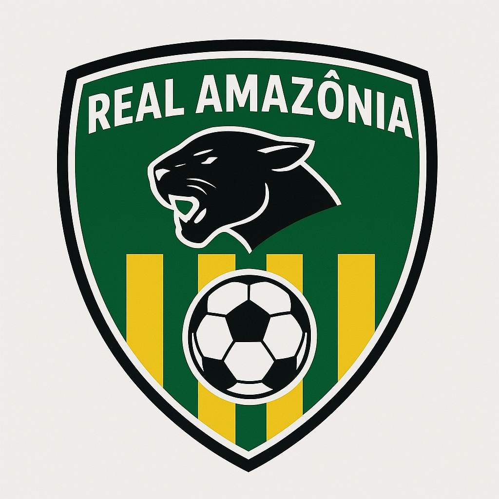

"Guerreiros da Floresta, Gigantes no Gramado"
Próximas partidas
.png)
Real Amazônia x Palmeiras

Real Amazônia x Flamengo

Real Amazônia x Palmeiras
Ultimas noticias
Real Amazônia anuncia contratação de técnico jovem
O Real Amazônia oficializou na manhã desta sexta-feira (03) a chegada de João Pedro Lima, técnico de 33 anos vindo do interior do Pará. Conhecido por sua proposta ofensiva e formação de jogadores jovens, João Pedro assinou contrato de duas temporadas. A diretoria espera que ele mantenha o estilo corajoso do time e eleve o desempenho no campeonato estadual e nas copas regionais.
Jovem promessa do Real Amazônia é convocado para seleção de base
O atacante de 17 anos, Lucas “Tigre” Silva, chamou atenção nos últimos jogos e foi convocado pela seleção brasileira sub-20 para amistosos amistosos internacionais. Lucas é o maior artilheiro do clube até agora nesta temporada, com 8 gols, e seu estilo habilidoso e rápido já rende comparações com jogadores de destaque do futebol nacional.
Real Amazônia busca primeira vitória contra Palmeiras
No próximo domingo, o Real Amazônia volta a enfrentar o Palmeiras em duelo válido pelo campeonato brasileiro. O técnico João Pedro Lima promete uma escalação ofensiva para tentar vencer fora de casa. Os jogadores destacam a importância de marcar pontos já nos jogos iniciais para entrar com moral no resto da competição.
Fonte: ge.globo.com